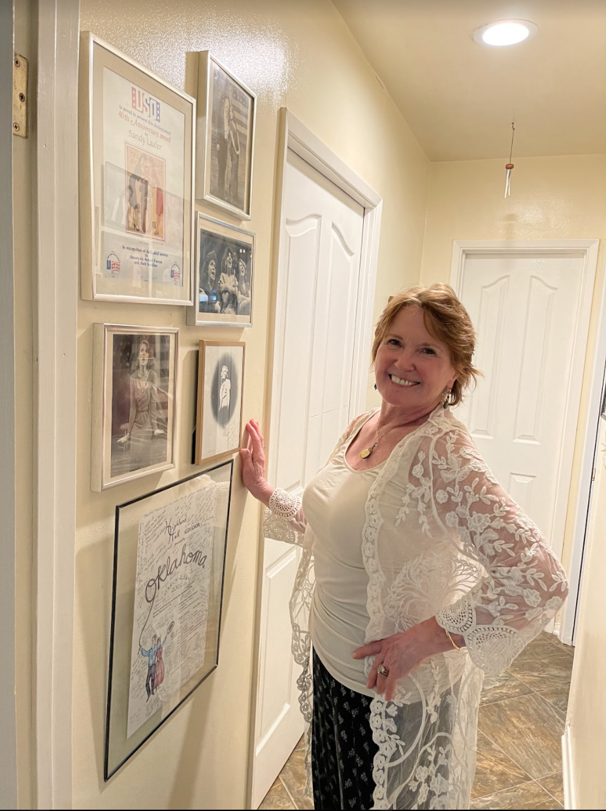
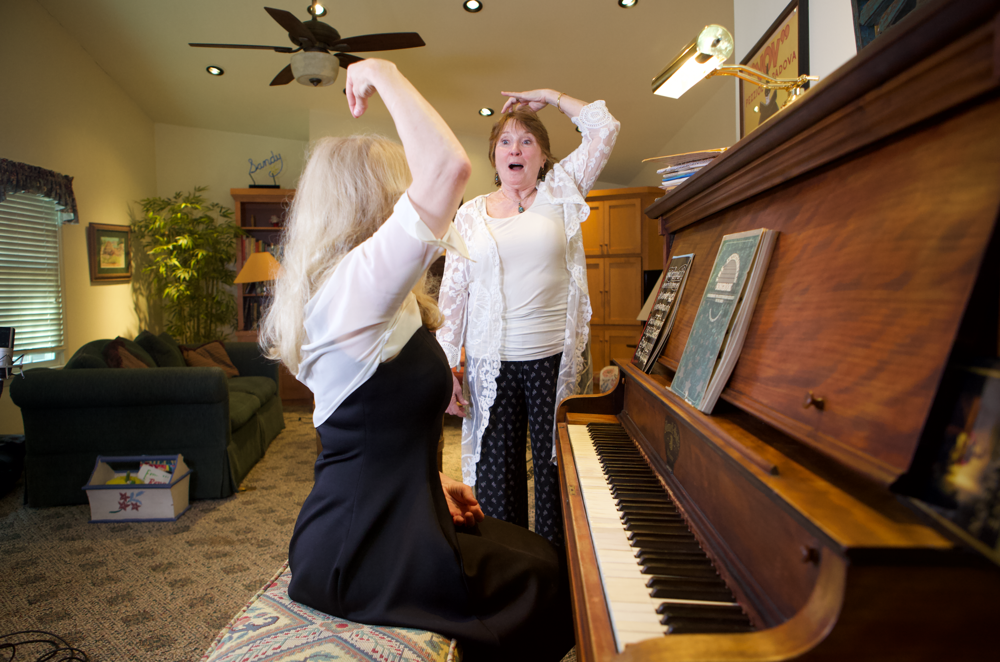
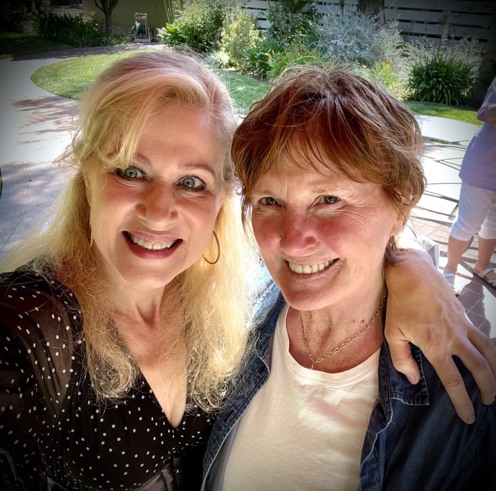

“During one lesson I became overwhelmed by an emotion in a song which made us both teary. My enjoyment of music is growing and seems to know no limits.”
“Although I felt anxiety during the lessons, especially in the first two, from being out of my comfort zone and expertise, I was encouraged by the team feedback and was able to relax and “let go, let fly”, as it says in the lyrics in Anyone can whistle.”
Sandy Blake
Here, My Voice Participant | Former Performer
My name is Sandy Blake and I live in Los Angeles. My hearing loss began in 2009 when I lost most of the hearing in my left ear, leaving me with terrible tinnitus. My work as a performer did not suffer and I still managed to tour with a small musical company, singing, acting, and coordinating the local choirs who appeared on stage with us.
In May 2017 I woke up one morning with absolutely no hearing in either ear. It was like someone had put a blanket over my head and the trauma was severe.
It took getting used to not being able to communicate, join a conversation, or appreciate music. After getting the implant I discovered that nothing I played on my piano sounded in tune which only added to the trauma and frustration.

Michele Patzakis
Here, My Voice Teacher | Doctor of Musical Arts, Alumna of USC Thornton School of Music
Sandy’s Experience
The next bright spot came with the Here, My Voice project during which six participants with hearing loss received voice lessons from students at the Thornton School of Music. I was paired with Michele Patzakis who has her Doctorate from USC and is a world class opera singer. It might have been intimidating to work with someone so accomplished and professional but from the first meeting Michele and I knew this would be a good experience.
My goals were specifically based around feeling free and confident when singing and with the amazing vocalizing exercises and lesson protocol, including physical movement, I more than reached my goals. With the sheer joy of singing notes above High C, I began to trust my voice and musical ear.
During one lesson I became overwhelmed by an emotion in a song which made us both teary. This song is one I have performed often and yet never experienced such a moving moment until during the lesson. It’s an example of what kind of bond and trust had been created between us. It became a joyful experience for us to share.
Michele has been such a cheerleader and confidante during these lessons. She has extraordinary perception and endless energy. With her guidance I am able to perform with ease and presence. As a performer who sang professionally and for my own joy, getting to work on my voice in a most healthy way is incredibly satisfying. My enjoyment of music is growing and seems to know no limits.


Michele’s Experience
I was invited to collaborate as a vocal instructor in a pilot research program involving Cochlear implant recipients as voice students. Due to my recent tenure as a DMA Teaching Assistant at the University of Southern California Thornton School of Music, I was matched with a hard-of-hearing student from the Hearing Loss Association of America (HLAA). Previous to earning my doctorate, I received a BM and MM in vocal performance and spent decades as an operatic soprano, voice teacher and arts administrator. Exploring therapeutic interventions through musical instruction greatly interested me. The primary investigators paired me with Sandy Blake.
Our primary goals were to find ways to help Sandy find that joy and personal satisfaction with singing. Our expressive goals were specifically for her to gain confidence, silence the inner self-critical voice, be “in the moment”, and enjoy singing. The secondary goals were to improve pitch matching and tuning, identify strengths as a baseline for building skills, and find repertoire to both allow for mastery as well as create challenge for growth.
Our rapport was comfortable and fun from the start. Each session brought greater mutual respect and friendship. I was and am overcome with gratitude for being paired with Sandy. Although I felt anxiety during the lessons, especially in the first two, from being out of my comfort zone and expertise, I was encouraged by the team feedback and was able to relax and “let go, let fly”, as it says in the lyrics in Anyone can whistle.
